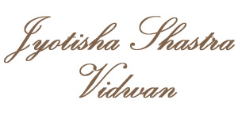

About Dr. Phaniraj Mathamudre Shastry
Vedic Astrologer, Medical Astrology Researcher & Palmistry Specialist

About Me & The Mission
"This is a nonprofit and charitable organization wherein clients are provided free predictions for those who come and express their economical constraints, helping them with authentic remedies to overcome obstacles and bring happiness to their families."
With this background, Dr. Phaniraj started reading Palmistry way back in 1991 and started mastering the art of foretelling to the people surrounding him by reading their hands. Since his intuitive power started working and with a logical thinking and applied science of palmistry, he started foretelling the future of clients who approached him. This gave him immense confidence in pursuing Astrology as his passion.
When he came back from North India and started working at Bangalore in 2003, he met Dr. Prabhakar Kashyap, founder and Chairman of SCOPE (Study Centre for Optics & Prophetic Education ®), NR Colony, Bangalore, who was the instrument and Guru to Dr. Phaniraj’s astrological career, where he began formal studies in Vedic Astrology in 2003.
Honors & Titles Conferred
Through dedicated practice and scholarly examination, Dr. Phaniraj was awarded:
- JYOTHISH SHASTRA PRAVEENA
- JYOTHISH SHASTRA VIDWAN
- JYOTHIR VIDYA PRAPANNA
- JYOTHIR SHIROMANI
- JYOTHISH VIDYA BHASKARA
Dr. Phaniraj presented numerous research papers at various National and International Astrological seminars. Continuing his advanced academic research in Astrology, he completed his Master of Arts (Vedic Astrology) from The Open International University for Complementary Medicines, Colombo, Srilanka in November 2010.
With this confidence and Guruji’s blessing, he wrote a landmark thesis on "Fifth Bhava - Childlessness" and presented the paper at the International Conference held in Sri Lanka in November 2011, wherein he was conferred the Doctor of Philosophy (PhD in Vedic Astrology).
Till today, Dr. Phaniraj has continuously pursued his career in Astrology with the profound purpose of helping mankind know upcoming life events beforehand and applying authentic remedies for the ill effects of their planetary configurations.
SAMASTHA SANMANGALANI BHAVANTHU
Accreditation & Awards Gallery
Certificates of excellence, academic degrees, and honorary titles awarded to Dr. Phaniraj Mathamudre Shastry. Click any image to view in high resolution.
